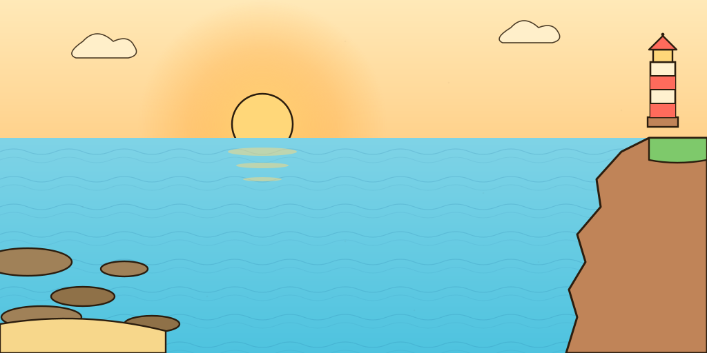

Three sources side-by-side per asset. Pick the winner you want shipped
into MissionScene; a follow-up PR wires it into the manifest.
Asset A — Player ship sprite~96 × 128 token
Used as the Going Merry token in MissionScene. Must read at ≥ 64 px
tall on the tightest board. Currently a generic textured rect in
src/game/assets/manifest.ts.
AI (gpt-image-1)~$0.04
Storybook sticker, oblique-top
Charming sticker style with cream sails and a tiny Jolly Roger flag.
Crisp ink outline, matches the parchment HUD beautifully. Caveat:
the model gave us an oblique-top view (sails tilted forward) instead of
strict top-down — readable on the board but not "true" overhead.
True top-down galleon with a square sail showing the Jolly Roger
crossbones. Vector-clean, scales perfectly down to 32 px and stays
legible. Drop-in ready, zero rework. The visual language is
flat-cartoon-with-outline, which sits a hair colder than our
warm-sticker AI option, but it's the most game-honest option.
Authored against the design tokens directly: warm tan hull,
cream sails, coral flag, 3 px ink border, 8 px sticker drop
shadow. Infinitely scalable, recolorable from CSS, but the
top-down composition is geometric — it reads as "diagram of a
ship" more than "ship". Best if we ever want themed recolors.
128 px64 px (in-game)
art/svg/ship-sprite.svg · pure SVG, no deps, scales freely.
Recommend Stock (Kenney). True top-down read, CC0, scales
cleanly, drop-in. Use the AI version as a hero/menu artwork (it's
gorgeous) and keep SVG in reserve for future recolor needs.
Asset B — Foglight Cove board background~1024 × 512 wide
Sits under the 6 × 3 grid in the tutorial-cove mission.
Should evoke "calm cove at sunrise" without competing with the foreground
tile sprites — composition needs a quiet middle band.
AI (gpt-image-1)~$0.04
Recommend
Sunrise cove, painterly
Hits the brief exactly: pale-blue cove, low-tide rocks on the left,
red-striped lighthouse on a grassy cliff on the right, warm cream sky,
empty quiet middle ideal for tiles. Palette matches our tokens.
The single "wow" candidate among the three.
The composed sample scene that ships with the Kenney pirate pack —
islands, water, docks, all top-down and matched to the ship sprite.
Caveat: no lighthouse, so it doesn't specifically read as
"Foglight Cove" — we'd need to composite a lighthouse stamp on top
in MissionScene. Visual style is flatter than our warm-painterly target.
Painted against the exact design tokens: gradient sky into sea, sun
+ shimmer, striped lighthouse on the right cliff, rocks on the left.
Renders crisp at any board size and is trivially recolorable per sea.
Looks a touch flatter than the AI option — it's "good schematic," not
"wow illustration."

art/svg/foglight-cove-background.svg · scales to any board, ~3 KB.
Recommend AI. The painterly cove is the only option that
delivers the "Foglight Cove" identity (lighthouse + sunrise + named
atmosphere) without extra composition work. Stock is the safe fallback
if AI provenance is ever a concern; SVG is the right call if we plan to
theme each sea programmatically.